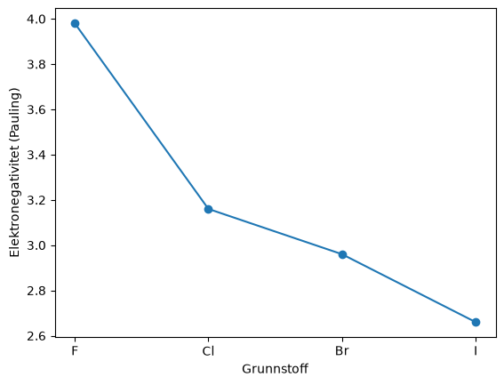
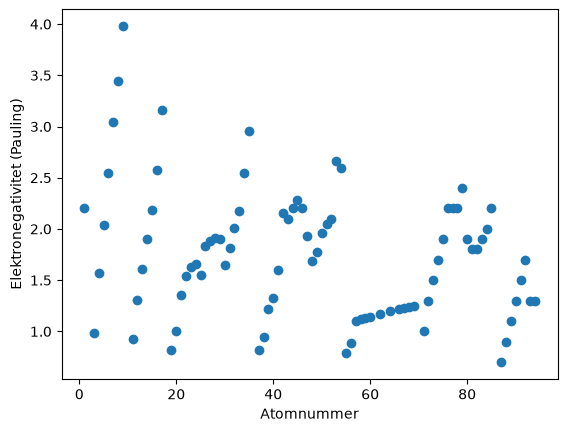
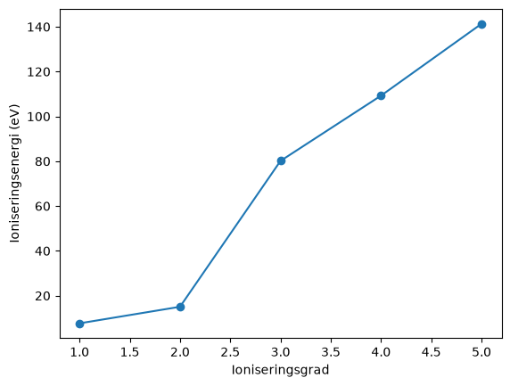
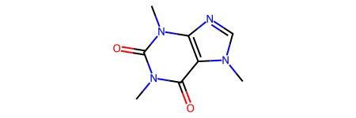

Forelesning 1: Kjemiske biblioteker og molekylvisualisering (løsningsforslag)#
Installasjon#
!pip install mendeleev pubchempy rdkit py3Dmol
Del 1: Grunnstoffdata med mendeleev#
from mendeleev import element
import matplotlib.pyplot as plt
svovel = element("S")
print(svovel.name)
print(svovel.atomic_number)
print(svovel.atomic_weight)
print(svovel.block, svovel.period, svovel.group_id)
Sulfur
16
32.06
p 3 16
print("Pauling:", svovel.electronegativity("pauling"))
print("Allen:", svovel.electronegativity("allen"))
print("Mulliken:", svovel.electronegativity("mulliken"))
Diskuter: Pauling-skalaen er enhetsløs og bygger på bindingsenergier. Allen- og Mulliken-skalaen bygger på energier og har enheten eV. Tallene kan derfor ikke sammenliknes direkte. Rekkefølgen grunnstoffene får på hver skala, kan derimot sammenliknes.
Trender i en periode#
halogener = ["F", "Cl", "Br", "I"]
verdier = []
for symbol in halogener:
grunnstoff = element(symbol)
verdier.append(grunnstoff.electronegativity("pauling"))
plt.plot(halogener, verdier, marker="o")
plt.xlabel("Grunnstoff")
plt.ylabel("Elektronegativitet (Pauling)")
plt.show()

Bortover i en periode øker elektronegativiteten, fordi kjerneladningen øker mens elektronene havner i det samme skallet. Nedover i en gruppe avtar den, fordi valenselektronene ligger lenger fra kjernen og skjermes av flere indre skall.
Manglende verdier#
Programmet skriver ut symbolet og Pauling-elektronegativiteten til alle grunnstoffene. Edelgassene He, Ne, Ar, Kr og Rn mangler verdi, fordi skalaen bygger på bindingsenergier og disse danner få eller ingen bindinger. Noen lantanoider mangler også verdi, og det samme gjør de tyngste grunnstoffene, som bare er laget i svært små mengder og har kort levetid.
atomnumre = []
elektronegativiteter = []
for atomnummer in range(1, 119):
grunnstoff = element(atomnummer)
verdi = grunnstoff.electronegativity("pauling")
if verdi is not None:
atomnumre.append(atomnummer)
elektronegativiteter.append(verdi)
plt.scatter(atomnumre, elektronegativiteter)
plt.xlabel("Atomnummer")
plt.ylabel("Elektronegativitet (Pauling)")
plt.show()

Ioniseringsenergier#
natrium = element("Na")
print("1. ioniseringsenergi:", natrium.ionenergies[1], "eV")
print("2. ioniseringsenergi:", natrium.ionenergies[2], "eV")
1. ioniseringsenergi: 5.13907696 eV
2. ioniseringsenergi: 47.28636 eV
magnesium = element("Mg")
grader = [1, 2, 3, 4, 5]
energier = []
for grad in grader:
energier.append(magnesium.ionenergies[grad])
plt.plot(grader, energier, marker="o")
plt.xlabel("Ioniseringsgrad")
plt.ylabel("Ioniseringsenergi (eV)")
plt.show()

Spranget kommer mellom 2. og 3. ioniseringsenergi. De to første elektronene er 3s-elektroner. Det tredje må fjernes fra det fylte 2p-skallet, som ligger mye nærmere kjernen.
Del 2: Data om forbindelser med PubChemPy#
import pubchempy as pcp
treff = pcp.get_compounds("paracetamol", "name")
paracetamol = treff[0]
print("PubChem CID:", paracetamol.cid)
print("Molekylformel:", paracetamol.molecular_formula)
print("Molar masse:", paracetamol.molecular_weight, "g/mol")
print("SMILES:", paracetamol.smiles)
PubChem CID: 1983
Molekylformel: C8H9NO2
Molar masse: 151.16 g/mol
SMILES: CC(=O)NC1=CC=C(C=C1)O
navneliste = ["caffeine", "paracetamol", "aspirin", "ibuprofen"]
smiles_pubchem = {}
for navn in navneliste:
forbindelse = pcp.get_compounds(navn, "name")[0]
smiles_pubchem[navn] = forbindelse.smiles
print(smiles_pubchem)
{'caffeine': 'CN1C=NC2=C1C(=O)N(C(=O)N2C)C', 'paracetamol': 'CC(=O)NC1=CC=C(C=C1)O', 'aspirin': 'CC(=O)OC1=CC=CC=C1C(=O)O', 'ibuprofen': 'CC(C)CC1=CC=C(C=C1)C(C)C(=O)O'}
smiles = {
"koffein": "CN1C=NC2=C1C(=O)N(C)C(=O)N2C",
"paracetamol": "CC(=O)Nc1ccc(O)cc1",
"acetylsalisylsyre": "CC(=O)Oc1ccccc1C(=O)O",
"ibuprofen": "CC(C)Cc1ccc(cc1)C(C)C(=O)O",
}
Del 3: Molekyler som struktur med RDKit#
SMILES#
from rdkit import Chem
from rdkit.Chem import Draw, Descriptors, AllChem
from rdkit.Chem.Draw import IPythonConsole
koffein = Chem.MolFromSmiles(smiles["koffein"])
koffein

ugyldig = Chem.MolFromSmiles("C1CC")
print(ugyldig)
None
[13:53:23] SMILES Parse Error: unclosed ring for input: 'C1CC'
Vi får None. Tallet 1 åpner en ring, men ringen blir aldri lukket. En gyldig SMILES-kode for syklopropan er C1CC1.
Fra struktur til egenskap#
for stoffnavn in smiles:
molekyl = Chem.MolFromSmiles(smiles[stoffnavn])
print(stoffnavn)
print(" Molar masse:", round(Descriptors.MolWt(molekyl), 2), "g/mol")
print(" logP:", round(Descriptors.MolLogP(molekyl), 2))
print(" TPSA:", round(Descriptors.TPSA(molekyl), 1))
print(" H-donorer:", Descriptors.NumHDonors(molekyl))
print(" H-akseptorer:", Descriptors.NumHAcceptors(molekyl))
koffein
Molar masse: 194.19 g/mol
logP: -1.03
TPSA: 61.8
H-donorer: 0
H-akseptorer: 3
paracetamol
Molar masse: 151.16 g/mol
logP: 1.35
TPSA: 49.3
H-donorer: 2
H-akseptorer: 2
acetylsalisylsyre
Molar masse: 180.16 g/mol
logP: 1.31
TPSA: 63.6
H-donorer: 1
H-akseptorer: 3
ibuprofen
Molar masse: 206.28 g/mol
logP: 3.07
TPSA: 37.3
H-donorer: 1
H-akseptorer: 1
Del 4: Fra 2D til 3D#
etanol = Chem.AddHs(Chem.MolFromSmiles("CCO"))
AllChem.EmbedMolecule(etanol, randomSeed=42)
AllChem.MMFFOptimizeMolecule(etanol)
molblokk = Chem.MolToMolBlock(etanol)
print(molblokk)
RDKit 3D
9 8 0 0 0 0 0 0 0 0999 V2000
-0.8863 0.1641 -0.0728 C 0 0 0 0 0 0 0 0 0 0 0 0
0.4727 -0.5042 -0.0484 C 0 0 0 0 0 0 0 0 0 0 0 0
1.3853 0.2794 0.7067 O 0 0 0 0 0 0 0 0 0 0 0 0
-0.8211 1.1573 -0.5291 H 0 0 0 0 0 0 0 0 0 0 0 0
-1.6057 -0.4358 -0.6371 H 0 0 0 0 0 0 0 0 0 0 0 0
-1.2644 0.3056 0.9450 H 0 0 0 0 0 0 0 0 0 0 0 0
0.8686 -0.6258 -1.0612 H 0 0 0 0 0 0 0 0 0 0 0 0
0.4053 -1.4920 0.4167 H 0 0 0 0 0 0 0 0 0 0 0 0
1.4456 1.1513 0.2803 H 0 0 0 0 0 0 0 0 0 0 0 0
1 2 1 0
2 3 1 0
1 4 1 0
1 5 1 0
1 6 1 0
2 7 1 0
2 8 1 0
3 9 1 0
M END
Diskuter: Linja 9 8 betyr 9 atomer og 8 bindinger. Deretter kommer én linje per atom med x-, y- og z-koordinater (i Å) og grunnstoffsymbol. Til slutt kommer én linje per binding med de to atomnumrene og bindingstypen (1 er enkeltbinding).
Visualisering med py3Dmol#
import py3Dmol
visning = py3Dmol.view(width=400, height=300)
visning.addModel(molblokk, "mol")
visning.setStyle({"stick": {}})
visning.zoomTo()
visning.show()
3Dmol.js failed to load for some reason. Please check your browser console for error messages.
Diskuter: Kalottmodellen gir best inntrykk av størrelsen og formen, fordi atomene vises med van der Waals-radius. Pinnemodellen og kule-pinne-modellen viser bindingene best.
def vis_3d(smiles_kode, stil={"stick": {}}):
molekyl = Chem.AddHs(Chem.MolFromSmiles(smiles_kode))
AllChem.EmbedMolecule(molekyl, randomSeed=42)
AllChem.MMFFOptimizeMolecule(molekyl)
visning = py3Dmol.view(width=400, height=300)
visning.addModel(Chem.MolToMolBlock(molekyl), "mol")
visning.setStyle(stil)
visning.zoomTo()
visning.show()
vis_3d(smiles["ibuprofen"])
vis_3d(smiles["ibuprofen"], stil={"sphere": {}})
3Dmol.js failed to load for some reason. Please check your browser console for error messages.
3Dmol.js failed to load for some reason. Please check your browser console for error messages.
Proteiner fra Protein Data Bank#
visning = py3Dmol.view(query="pdb:4HHB", width=500, height=400)
visning.setStyle({"cartoon": {"color": "spectrum"}})
visning.addStyle({"resn": "HEM"}, {"stick": {}})
visning.zoomTo()
visning.show()
3Dmol.js failed to load for some reason. Please check your browser console for error messages.
visning = py3Dmol.view(query="pdb:6EC0", width=500, height=400)
visning.setStyle({"cartoon": {"colorscheme": "chain"}})
visning.zoomTo()
visning.show()
3Dmol.js failed to load for some reason. Please check your browser console for error messages.
Keratin består nesten bare av α-helikser som er tvunnet rundt hverandre. Slike lange, sammentvinnede helikser gir sterke fibre, som passer med at keratin finnes i hår og negler.
Vurdere et bibliotek#
Diskuter: Sjekk at biblioteket faktisk finnes (for eksempel på PyPI), at det har dokumentasjon og er oppdatert, og at funksjonen brukes slik dokumentasjonen beskriver. Test deretter koden på et eksempel der du kjenner svaret, for eksempel en molar masse du kan regne ut for hånd.
Oppgaver#
Oppgave 1#
symboler = ["Na", "Mg", "Al", "Si", "P", "S", "Cl", "Ar"]
energier = []
for symbol in symboler:
energier.append(element(symbol).ionenergies[1])
plt.plot(symboler, energier, marker="o")
plt.xlabel("Grunnstoff")
plt.ylabel("1. ioniseringsenergi (eV)")
plt.show()
Ioniseringsenergien øker bortover perioden fordi kjerneladningen øker. Ved Al fjernes et 3p-elektron, som ligger høyere i energi og skjermes av 3s-elektronene. Ved S fjernes et elektron fra en orbital med to elektroner, og frastøtningen mellom dem gjør det lettere å fjerne.
Oppgave 2#
atomnumre = []
radier = []
for atomnummer in range(19, 37):
atomnumre.append(atomnummer)
radier.append(element(atomnummer).atomic_radius)
plt.plot(atomnumre, radier, marker="o")
plt.xlabel("Atomnummer")
plt.ylabel("Atomradius (pm)")
plt.show()
Radien avtar raskt fra K til Sc og deretter fra Ga mot Kr, fordi kjerneladningen øker. For overgangsmetallene (Sc til Zn) er radien nesten konstant. Kr mangler verdi i mendeleev, så det siste punktet blir ikke plottet. Elektronene legges i indre 3d-orbitaler, som skjermer de ytre 4s-elektronene, så den effektive kjerneladningen øker lite.
Oppgave 3#
navneliste = ["caffeine", "nicotine", "morphine", "cholesterol", "ibuprofen"]
molekyler = []
logP = []
TPSA = []
for navn in navneliste:
forbindelse = pcp.get_compounds(navn, "name")[0]
molekyl = Chem.MolFromSmiles(forbindelse.smiles)
molekyler.append(molekyl)
logP.append(Descriptors.MolLogP(molekyl))
TPSA.append(Descriptors.TPSA(molekyl))
plt.scatter(logP, TPSA)
plt.xlabel("logP")
plt.ylabel("TPSA (Å$^2$)")
plt.show()
Draw.MolsToGridImage(molekyler, legends=navneliste, molsPerRow=5)
Stoffer med stort polart overflateareal har gjerne lav logP. De er mer polare og løser seg bedre i vann enn i oktanol. Kolesterol har lav TPSA og svært høy logP.
Oppgave 4#
vis_3d("OC(=O)c1ccccc1", stil={"stick": {}, "sphere": {"scale": 0.3}})
vis_3d("OC(=O)c1ccccc1", stil={"sphere": {}})
visning = py3Dmol.view(query="pdb:6EC0", width=500, height=400)
visning.setStyle({"cartoon": {"color": "spectrum"}})
visning.zoomTo()
visning.show()
Oppgave 5#
monstre = {
"keton": "[#6][CX3](=O)[#6]",
"eter": "[#6][OX2][#6]",
}
test_smiles = {
"aceton": "CC(=O)C",
"dietyleter": "CCOCC",
"etylacetat": "CCOC(=O)C",
"acetylsalisylsyre": "CC(=O)Oc1ccccc1C(=O)O",
"etanol": "CCO",
}
for stoffnavn in test_smiles:
molekyl = Chem.MolFromSmiles(test_smiles[stoffnavn])
for gruppe in monstre:
mal = Chem.MolFromSmarts(monstre[gruppe])
print(stoffnavn, gruppe, len(molekyl.GetSubstructMatches(mal)))
Etermønsteret gir også treff på estere (etylacetat og acetylsalisylsyre), fordi oksygenet i en ester også er bundet til to karbonatomer. For å finne bare etere må vi kreve at ingen av karbonatomene har en dobbeltbinding til oksygen.